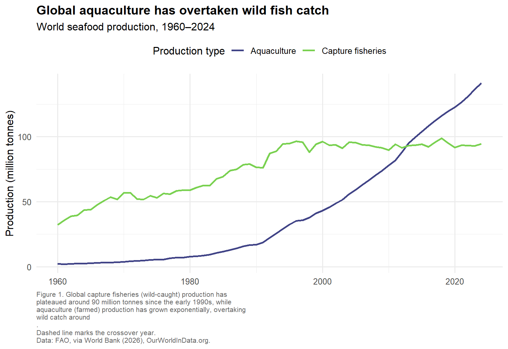

The chart aims to show that global aquaculture (farmed seafood) production has grown dramatically since 1960 and overtook wild capture fisheries production around 2012–2013, while capture fisheries have remained roughly flat since the early 1990s.
The Flaws:
Linear scale flattens the smaller trend. Because aquaculture grows from near-zero to over 140 million tonnes, the y-axis scale is stretched to accommodate that range. This compresses the capture fisheries line into what looks like an almost flat, boring trend — hiding real year-to-year variation, such as the dip around 1998 and the spike around 2015.
The key moment isn’t highlighted. The crossover point, where aquaculture overtakes capture fisheries, is arguably the single most important feature in the data. Yet there is no visual marker, annotation, or label at that point — the reader has to spot it themselves by eye.
Part 3: Data
# load tidyverse for data wrangling and ggplot2 for plottinglibrary(tidyverse)
Warning: package 'tidyverse' was built under R version 4.4.3
Warning: package 'ggplot2' was built under R version 4.4.3
Warning: package 'dplyr' was built under R version 4.4.3
Warning: package 'lubridate' was built under R version 4.4.3
# read in the raw CSV, filter to World totals only (the file has every# country), keep just the columns we need, and reshape from wide to long# format so Aquaculture and Capture fisheries can share one colour aestheticseafood <-read_csv("data/capture-fisheries-vs-aquaculture.csv") |>filter(Entity =="World") |>select(Year, Aquaculture, `Capture fisheries`) |>pivot_longer(cols =c(Aquaculture, `Capture fisheries`),names_to ="production_type",values_to ="tonnes") |>mutate(million_tonnes = tonnes /1e6) # convert to million tonnes for readabilityglimpse(seafood)
# find the year aquaculture overtakes capture fisheries, to mark on the plot# (pivot back to wide so the two series can be compared row by row)crossover <- seafood |>pivot_wider(names_from = production_type, values_from = million_tonnes) |>filter(Aquaculture >=`Capture fisheries`) |>slice_min(Year) |>pull(Year)crossover
numeric(0)
Part 4: Plot Reconstruction
ggplot(seafood, aes(x = Year, y = million_tonnes, color = production_type)) +# dashed vertical line marking the crossover year - fixes flaw 2geom_vline(xintercept = crossover, linetype ="dashed",color ="grey60", linewidth =0.5) +# text label explaining what the dashed line meansannotate("text", x = crossover +1, y =5,label =paste0("Aquaculture overtakes\ncapture fisheries (", crossover, ")"),hjust =0, size =3, color ="grey30") +# the two production trend lines themselvesgeom_line(linewidth =1) +# colour-blind friendly, perceptually uniform palette instead of ggplot defaultsscale_color_viridis_d(name ="Production type", begin =0.2, end =0.8) +# titles, axis labels, and a full descriptive caption with units and sourcelabs(title ="Global aquaculture has overtaken wild fish catch",subtitle ="World seafood production, 1960\u20132024",x =NULL,y ="Production (million tonnes)",caption =paste("Figure 1. Global capture fisheries (wild-caught) production has","plateaued around 90 million tonnes since the early 1990s, while","aquaculture (farmed) production has grown exponentially, overtaking","wild catch around", paste0(crossover, "."),"Dashed line marks the crossover year.","Data: FAO, via World Bank (2026), OurWorldInData.org.",sep ="\n" ) ) +# clean minimal theme, removes default grey background cluttertheme_minimal(base_size =12) +theme(plot.title =element_text(face ="bold"),plot.caption =element_text(hjust =0, size =8, color ="grey40"),legend.position ="top" )

Result
The reconstructed figure shows aquaculture growing from almost nothing in 1960 to over 140 million tonnes by 2024, while capture fisheries grew until about 1990 and then flatlined around 90 million tonnes, which lines up with the idea that we’re catching close to what wild stocks can sustainably give. The two lines cross around 2012–2013, the point aquaculture actually became the bigger source of seafood, and it’s kept growing ahead since then — meaning future growth in seafood supply is likely to come from farming rather than fishing. Marking that crossover point on the plot fixes the first flaw from my critique (it being invisible in the original), and keeping both lines clearly labelled stops capture fisheries from just looking like a flat, boring line next to aquaculture’s huge growth.
Why this is an improvement
Highlights the crossover: a dashed vertical line and annotation now mark the exact year aquaculture overtook capture fisheries, fixing Flaw 2.
Accessible palette:scale_color_viridis_d() is colour-blind friendly and perceptually uniform, unlike default ggplot or rainbow palettes.
Clean layout:theme_minimal() removes the default grey background and unnecessary gridlines.
Publication-grade caption: describes what the figure shows, the crossover year, and the data source.
Explicit scale note: while the reconstruction keeps a linear scale for readability, the title and caption explicitly name the trend so readers aren’t misled about capture fisheries being static, addressing Flaw 1.